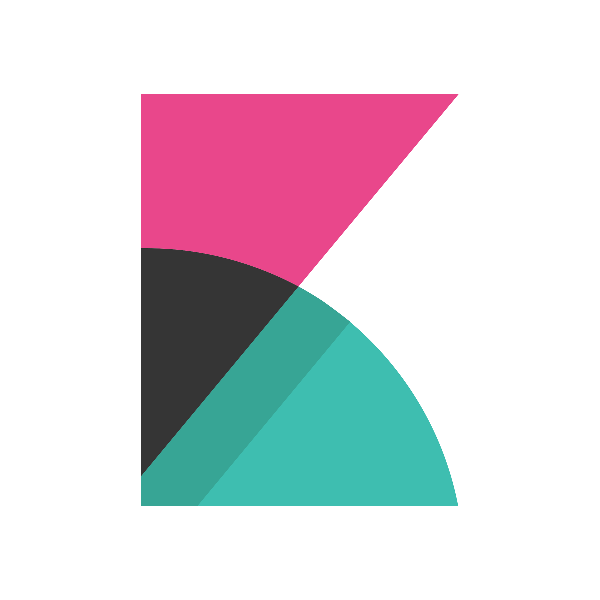

Big Data Engineer · Technical Lead · Solution Architect
I design reliable data platforms and observability systems that scale, perform, and deliver measurable business value.
Extensive experience delivering enterprise-grade analytics, ETL / ELT, and large-scale log ingestion systems across GCP, Azure, AWS, and on-premise environments.
Focus areas
- Scalable data platforms
- Real-time log ingestion
- Observability architecture
- Analytics engineering
- Technical leadership
01
Profile
Senior Data Engineer and Technical Lead with a strong track record of building scalable, high-performance data platforms across cloud and on-premise environments. Designed real-time ingestion and analytics systems using Elastic and Databricks, supporting workloads up to 1TB/day while improving reliability, throughput, and cost-efficiency across production systems.
Deep hands-on experience with Databricks, BigQuery, and observability stacks, combined with the ability to lead cross-functional teams, shape system architecture, and turn complex data problems into practical solutions that deliver measurable business value.
02
Strengths
01 / Architecture
Data platforms with long-term scale in mind
From batch analytics to near real-time observability, I design systems with reliability, fault tolerance, and maintainability as first-class priorities.
02 / Execution
End-to-end delivery across the full pipeline
I work comfortably from ingestion and modeling to orchestration, dashboarding, monitoring, and production hardening.
03 / Leadership
Strong bridge between business and engineering
I translate business needs into technical decisions, lead teams through implementation, and support proposal / solutioning conversations with clients.
03
Experience Timeline
Current role
Senior Data Engineer @ CMC Global, Hanoi
Feb 2026 – Present
- Worked as a Senior Data Engineer in building a BI platform for a global automotive company targeting the Korean market.
- Designed and optimized data pipelines and data models on Azure Databricks to support scalable analytics.
- Re-architected ETL workflows to improve performance and reduce processing time for large datasets.
- Built optimized data models for Power BI, enabling efficient reporting and visualization.
- Collaborated with stakeholders to translate business requirements into scalable data solutions.
Architecture / delivery
Technical Lead / Solution Architect @ CMC Global, Hanoi
Jul 2025 – Mar 2026
ElasticLogstashElasticsearch

Kibana- Served as Technical Lead and Solution Architect, leading the analyst and engineer team to design and implement a large-scale log ingestion and analytics platform for a semiconductor manufacturing system.
- Architected an on-premise, air-gapped Elastic Stack system handling up to 1TB/day log volume with near real-time processing (30–120s latency).
- Designed the end-to-end pipeline: Elastic Agent → Logstash → Elasticsearch → Kibana, ensuring high availability and fault tolerance.
- Implemented a multi-tier storage strategy (hot / warm / cold) using ILM to optimize cost and performance.
- Built resilient ingestion pipelines with buffering (Persistent Queue, DLQ) to prevent data loss during interruptions.
- Defined data modeling, index strategy, and naming conventions for large-scale observability use cases.
- Led system security design including network segmentation, HTTPS access, and role-based access control (RBAC).
- Delivered dashboards, monitoring, and alerting solutions for operational insights and anomaly detection.
Team lead
Data Engineering Team Lead @ CMC Global, Hanoi
Mar 2025 – Jul 2025
- Led the database team in a cross-functional database migration project, transitioning from MongoDB Atlas to Amazon Aurora.
- Designed and implemented data migration strategies ensuring data consistency, integrity, and minimal downtime.
- Leveraged Prisma ORM with TypeScript to redesign data access layers and optimize query performance.
- Collaborated closely with backend teams to refactor services and align with relational database design principles.
- Identified and resolved schema mismatches between NoSQL and relational models, ensuring seamless migration.
Pre-sales / solutioning
Technical Lead (PoC / Solution Design) @ CMC Global, Hanoi
Jul 2024 – Dec 2024
Elastic StackElasticsearchKibana
- Acted as Technical Lead for a critical Proof-of-Concept project to validate a large-scale log management and analytics solution for a semiconductor manufacturing system.
- Led the end-to-end solution design and proposal process, working closely with stakeholders to define system requirements and architecture using Elastic Stack.
- Designed and delivered a production-grade PoC system that was actively used by the client on a daily basis, serving as a foundation for the full-scale implementation.
- Conducted technical presentations, solution demonstrations, and architecture walkthroughs to convince stakeholders and secure project buy-in.
- Played a key role in technical proposal writing, estimation, and solution positioning, contributing directly to business acquisition.
- Led and coordinated the engineering team, ensuring alignment between business requirements and technical implementation.
- Built strong experience in client communication, negotiation, and cross-functional collaboration in a pre-sales / solutioning context.
Analytics engineering
Data Engineer @ NTT Data VDS., Hanoi
Jan 2024 – Jul 2024
Worked in a Kanban team, mainly focused on creation of automated workflows for fleet measurement analysis. Main responsibilities included:
- Seamlessly collaborated within a Kanban team, coordinating with 2 Vietnamese and 4 European colleagues to ensure project alignment and success.
- Harnessed Azure platform and proprietary tools to build robust data pipelines, supporting ingestion and processing of petabytes of raw data from data lakes.
- Deployed Azure Data Factory for orchestration and utilized Databricks to analyze massive datasets, each scaling to terabytes.
- Leveraged Elasticsearch and Kibana for comprehensive data exploration and insightful visualizations.
Software lead
Software Engineering Team Lead @ NTT Data VDS., Hanoi
Jun 2023 – Dec 2023
- Led the Vietnamese team of 5 developers in building a talent spark management application within a microservice architecture.
- Used DocumentDB auto-scaling to architect a resilient database system and developed Spring Boot microservices for high availability.
- Configured AWS services such as DocumentDB, S3, and EC2, integrating them with backend microservices.
- Implemented AWS Video on Demand for large-scale video streaming and created reusable Spring Boot APIs.
- Enabled rapid deployment of five microservice updates using EKS and GitLab CI.
Data team growth
Data Engineering Team Lead @ NTT Data VDS., Hanoi
Oct 2021 – May 2023
- Spearheaded the Vietnamese team, growing from a 2-member sub-team to leading the full 8-member team while collaborating with EU teams.
- Leveraged Google Cloud Dataflow, Scala, and Scio with Google Cloud Storage to design ETL pipelines for millions of streaming records from Salesforce, Siebel, and other sources.
- Optimized complex queries and database models in BigQuery, loading dozens of dimension tables and aggregating them into fact tables in a star schema.
- Ensured ACID compliance for large transactions involving terabytes of data, improving reliability and integrity.
- Used Apache Airflow (Cloud Composer) to orchestrate ETL pipelines and schedule parallel BigQuery jobs.
- Drove technical innovation by migrating from wildcard tables to Slowly Changing Dimension Type implementations in BigQuery.
- Conducted knowledge-sharing sessions on Airflow and BigQuery to raise team capability.
Early platform engineering
Software Engineer @ NTT Data VDS., Hanoi
May 2021 – Oct 2021
- Worked in a Scrum team to develop a mock testing application.
- Authored documents for analysis and design of MySQL schemas, adhering to 3rd Normal Form for efficient storage and retrieval.
- Implemented security with Keycloak and integrated advanced Quarkus security features with Angular components.
- Developed Java reactive backend services with Quarkus and frontend features with TypeScript, Angular, and SQL.
Internship
Intern Software Engineer @ VTI Vietnam, Hanoi
Jul 2020 – Nov 2020
- Collaborated on a web application using Spring Boot, Vue.js, and Microsoft SQL under guidance from senior engineers.
- Analyzed and documented project requirements, strengthening requirement understanding.
- Optimized an email notification feature capable of handling 5,000 emails per second using multi-threading and Thymeleaf templates.
- Built a Vue page for warehouse package interaction and wrote SQL procedures for Spring JPA integration.
- Gained exposure to Waterfall process methodology.
Starting point
Intern Software Engineer @ SODO Asia, Hanoi
Feb 2019 – Oct 2019
- Used Angular and Spring Boot to develop the FAQ module and bar-code scanning features for web and mobile applications with 30,000 monthly users.
- Improved user experience by implementing Angular / Ionic directives and services for helpful UI tooltips.
- Accelerated search queries through MongoDB full-text search.
- Protected employment modules using JWT, OAuth2, and role hierarchies in Angular.
- Integrated RabbitMQ into Spring Boot microservices to ensure smooth communication and notifications.
- Learned agile methodologies and teamwork in a startup environment.
04
Education
2016 → 2021
Engineer, Posts and Telecommunications Institute of Technology
Oct 2016 – Sept 2021
05
Highlights
- Designed data and observability systems processing up to 1TB/day.
- Worked across GCP, Azure, AWS, and on-premise environments.
- Led cross-functional engineering teams in both delivery and pre-sales contexts.
- Strong background in Databricks, BigQuery, Elastic Stack, and distributed ETL design.